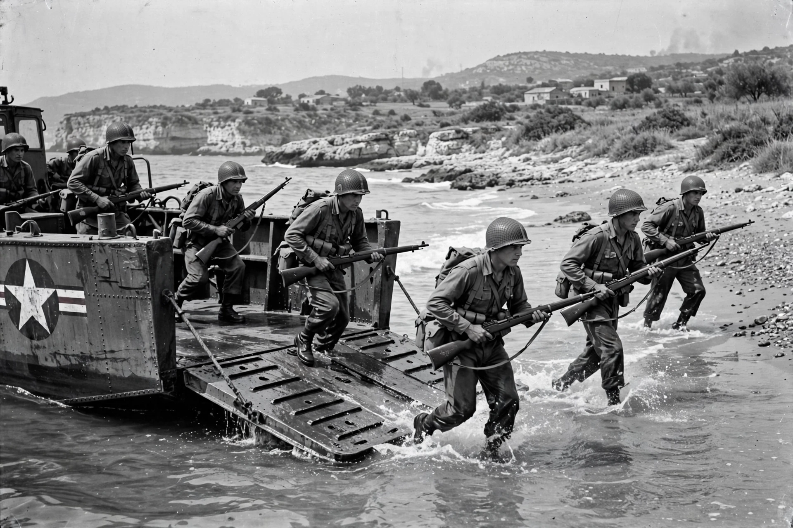

| Date | 9 July 1943 – 2 May 1945 |
|---|---|
| Location | Italy |
| Belligerents | Allies (US, UK, Commonwealth, Free French, Poles, Brazilians, Italian co-belligerents) vs Germany and the Italian Social Republic |
| Key battles | Sicily, Salerno, Anzio, Monte Cassino, Gothic Line |
| Result | Allied victory; fall of Fascist Italy; German surrender in Italy |
The Italian campaign of the Second World War was the Allied campaign in and around Italy from July 1943 to May 1945. It began with the invasion of Sicily, which triggered the fall of Mussolini and Italy's armistice, and continued as a gruelling advance up the mountainous peninsula against determined German defence, ending with the surrender of German forces in Italy days before the general end of the war in Europe.
Operation Husky, launched on the night of 9–10 July 1943, was the largest amphibious operation yet attempted. While the Allies conquered Sicily in 38 days, most Axis troops escaped across the Strait of Messina. Politically the invasion was decisive: on 25 July the Fascist Grand Council deposed Mussolini, and Marshal Badoglio's government secretly negotiated an armistice, announced on 8 September 1943. Germany immediately disarmed Italian forces and occupied the peninsula; the king and government fled to the Allied-held south, while Mussolini was rescued and installed as head of the puppet Italian Social Republic (see Fascist Italy).
Allied landings at Taranto, Salerno (September 1943) and Anzio (January 1944) failed to produce a rapid breakthrough against Field Marshal Albert Kesselring's skillful defence in Italy's mountain terrain. The Gustav Line, anchored on Monte Cassino, held through four battles between January and May 1944 — during which Allied bombing destroyed the ancient abbey — before Polish troops finally took the ruins and French forces broke through the mountains. Rome was liberated on 4 June 1944, two days before the Normandy landings eclipsed the campaign in the headlines.
In the autumn of 1944 the Allies battered against the Gothic Line in the northern Apennines, then halted for the winter while Italian partisans waged guerrilla war behind German lines. A final offensive in April 1945 broke into the Po Valley; Mussolini was captured and executed by partisans on 28 April, and German forces in Italy signed the surrender of Caserta, effective 2 May 1945.
This article is a recreation from memory for the muse-webcrawl project.